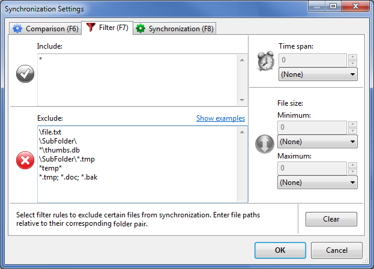

Files and directories are only considered for synchronization if they pass
all filter rules. They have to match at least one entry in the
include list and none of the entries in the exclude list as presented in the filter configuration dialog:
Example: Exclude items for mirror-sync from C:\Source to D:\Target
|
Description |
Exclude |
|
Single file C:\Source\file.txt |
\file.txt |
|
Single folder C:\Source\SubFolder |
\SubFolder\ |
|
All files (and folders) named thumbs.db |
*\thumbs.db |
|
All *.tmp files located in SubFolder only |
\SubFolder\*.tmp |
|
Files and folders containing temp somewhere in their path |
*temp* |
|
Multiple entries separated by semicolon |
*.tmp; *.doc; *.bak |
|
Exclude all subdirectories of the base directories |
*\ |
|
Exclude only *.txt files located in subdirectories of base directories |
\*\*.txt |